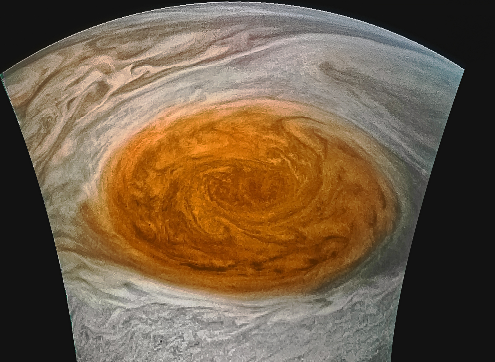
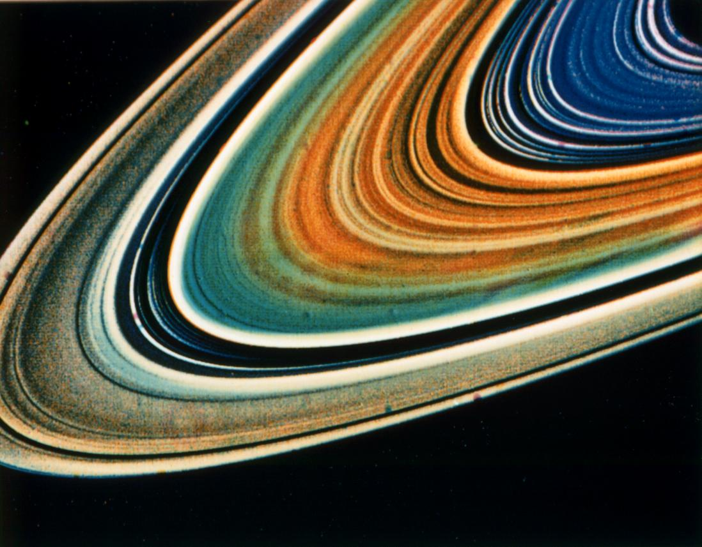
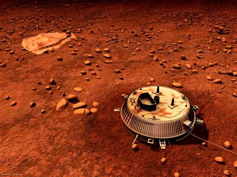

Jupiter: King of the Planets
Jupiter is the largest planet in our solar system, with a diameter more than 11 times that of Earth. It is primarily composed of hydrogen and helium.
Key Facts About Jupiter
- It has a powerful magnetic field, 20,000 times stronger than Earth's.
- Jupiter has **79 confirmed moons**, including the four large Galilean moons.
- A day on Jupiter is only about **10 hours** long, the shortest of any planet.
Saturn: The Ringed Beauty
Saturn is best known for its magnificent ring system, which is composed primarily of billions of small pieces of ice and rock.
The largest moon of Saturn, Titan, is unique because it is the only moon known to have a dense atmosphere and stable bodies of liquid on its surface.
